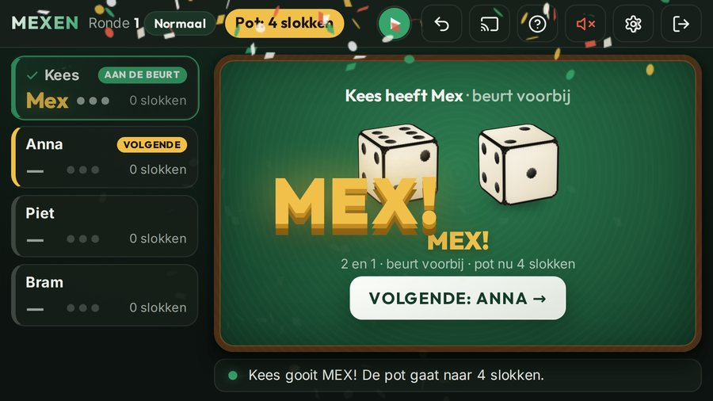
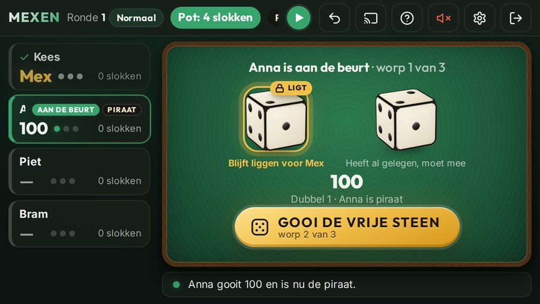
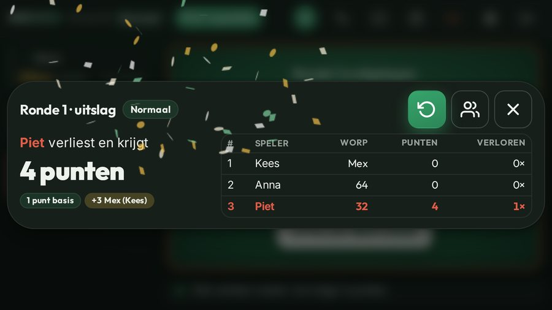

Mexen spelregels
Mexen (ook wel Mex of Maxen) is een snel dobbelspel met twee dobbelstenen. Iedereen gooit om de beurt; wie aan het eind van de ronde het laagst staat, verliest en neemt de pot. Je speelt om slokken of gewoon om punten. Aan elke tafel gelden net andere huisregels; hieronder staan de regels zoals de Mexen-app ze speelt.
- Spelers
- 2 of meer
- Nodig
- 2 dobbelstenen
- Een ronde
- een paar minuten
- Om slokken
- alleen 18+

Zo lees je een worp
De hoogste steen is het tiental, de laagste het eental: een 6 en een 4 is 64, een 5 en een 3 is 53. Van hoog naar laag:
- Mex (2 en 1) is de hoogste worp.
- Dubbelen tellen als honderdtallen: dubbel 6 is 600, dubbel 5 is 500, tot dubbel 1 = 100.
- Gewone worpen: 65, 64, 63, enzovoort, tot 41.
- 32 is de laagste worp.
- 31 is geen score: je deelt een slok uit en gooit opnieuw.
Een beurt
- Je hebt drie worpen en de laatste telt. Eerder stoppen mag niet; alleen een Mex of een 32 maakt je beurt meteen af.
- Na een worp mag je één steen laten liggen, maar hooguit één worp lang; daarna moet hij weer mee. Een 1 laten liggen geeft kans op Mex. Met een 2 kan dat ook, maar dan riskeer je een 32.
- De stenen blijven in de ronde op tafel: ook de volgende speler mag een net gegooide 1 laten liggen. Een nieuwe ronde begint met een lege tafel.
- Gooit de eerste speler van de ronde Mex in één of twee worpen, dan krijgt iedereen na hem ook maar zoveel worpen.
Mex, 32 en 31
- Mex (2 en 1): je beurt is meteen voorbij en er gaan 3 slokken bij in de pot.
- 32: de laagste worp. Je beurt is meteen voorbij en dit is je eindscore.
- 31: je deelt een slok uit aan wie je wilt. De worp telt niet mee en je gooit opnieuw, zo vaak als het gebeurt.
De piraat
Gooi je dubbel 1, dan word je de piraat. Elke dubbel 2 tot en met 6 die daarna valt, door wie dan ook, is een slok voor de piraat. Gooit de piraat zelf nog een keer dubbel 1, dan wordt hij piraat ×2: twee slokken per dubbel (en zo verder). Gooit iemand anders dubbel 1, dan neemt die het over. De piraat blijft over de rondes heen.

Einde van de ronde: de pot
- Als iedereen geweest is, verliest de laagste score. Die neemt de pot: 1 slok, plus 3 voor elke Mex in de ronde.
- Staan twee of meer spelers gelijk op het laagst, dan gooien zij elk één steen: de hoogste worp verliest. Weer gelijk? Dan gooien alleen zij opnieuw.
- De verliezer begint de volgende ronde.
Om punten in plaats van slokken
Liever zonder drank? Speel om punten: overal waar "slok" staat, lees je "punt". De verliezer van een ronde krijgt de pot als punten erbij; wie aan het eind de meeste punten heeft, staat onderaan. In de app kies je dit bij de eerste start, en later in de instellingen.

Variant: extreem
- Iedereen gooit altijd precies drie keer, ook na een Mex; alleen de derde worp telt.
- Stenen laten liggen mag niet: je gooit altijd met allebei.
- De pot begint op 1. Mex en 65 verdubbelen de pot, en elke dubbel telt zijn ogen erbij op (dubbel 3 = +3, dubbel 1 = +1). Alles in de volgorde waarin het gegooid wordt.
- 31 telt niet: gewoon opnieuw gooien, zonder slok uit te delen. De piraat werkt als in het gewone spel.
- De laagste neemt de hele pot; bij een gelijke stand gooien die spelers elk één steen, net als hierboven.
De app houdt het voor je bij
De gratis Mexen-app is de scorebewaarder: 3D-dobbelstenen, de app kent alle regels hierboven, houdt de pot en de piraat bij en zegt wie er verliest. In zes talen, zonder account, ook zonder internet.
Verantwoord spelen
Speel je om slokken? Alleen vanaf 18 jaar, drink met mate en rijd daarna niet. Twijfel je over alcoholgebruik, van jezelf of van iemand anders? Kijk op alcoholinfo.nl (Nederland) of druglijn.be (België).